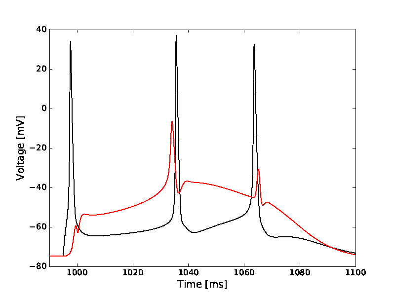

This is the readme for the models associated with the paper: Wilmes KA, Sprekeler H, Schreiber S (2016) Inhibition as a Binary Switch for Excitatory Plasticity in Pyramidal Neurons. PLoS Comput Biol 12:e1004768 1. Install NEURON with the --with-nrnpython option: http://www.neuron.yale.edu/neuron/download 2. Download neurotools (you only need the parameters module), install it and add it to your python PATH: http://pythonhosted.org/NeuroTools/parameters.html# 3. Compile the mod files, using: "nrnivmodl mod_files" in the directory containing the python files if unix/linux platform (see https://senselab.med.yale.edu/ModelDB/NEURON_DwnldGuide.html for help with other platforms) 4. Run the python script for the Figure to be reproduced (see the following) in the same directory. There are scripts that produce different Figures depending on the config-file (config_*.py) that is imported. If needed, change the name of the config in the import statement to the one that is mentioned below to get the desired Figure. Figure 1B-E: model_stim.py with config_model_stim.py The files are set to produce Fig1D by default (with command 'python model_stim.py' a couple of eps files will be created in a new subfolder):  (To produce Fig1B,C and E, set the variable 'SCEN' in model_stim.py to 1, 2, and 4, respectively.) Figure 1F: critical_frequency.py with config_validation.py Figure 2A: allornone.py with config_allornone.py The files are set to produce three representative lines from the plot in Figure 2A. To get all lines set the variable 'shunt_weights' in allornone.py as follows: shunt_weights = np.arange(0,0.1,0.005). Figure 3A: traces.py with config_traces.py Figure 3B: WARNING: this script takes a while, the simulation is run 1000 times with different values of shunt_weight and shunt_delay timing.py with config_timing.py Figure 3C: WARNING: this script takes a while, the simulation is run 1000 times with different values of shunt_weight and shunt_delay timing_apicalstim.py with config_timing_apical.py Figure 4A-a to 4A-d : traces.py with config_traces_ca.py Figure 4A-e: traces.py with config_traces_pos3.py Figure 4B: WARNING: this script takes a while, the simulation is run 2500 times with different values of shunt_weight and shunt_delay timing.py with config_timing_ca.py Figure 4C: WARNING: this script takes a while, the simulation is run 2500 times with different values of shunt_weight and shunt_delay timing_apicalstim.py with config_timing_apical_ca.py Figure 6: pairingprotocol.py with config_pairing.py The files are set to produce Fig6aIII. To produce the others, set the parameters params['pos'] and params['shunt_pos'] in config_pairing appropriately: pos: 1 basal 2 oblique 3 distal shunt_pos: 0 no inhibition 1 distal inhibition 2 proximal apical inhibition 3 basal inhibition Figure 7: FF_circuit with config_circuit.py